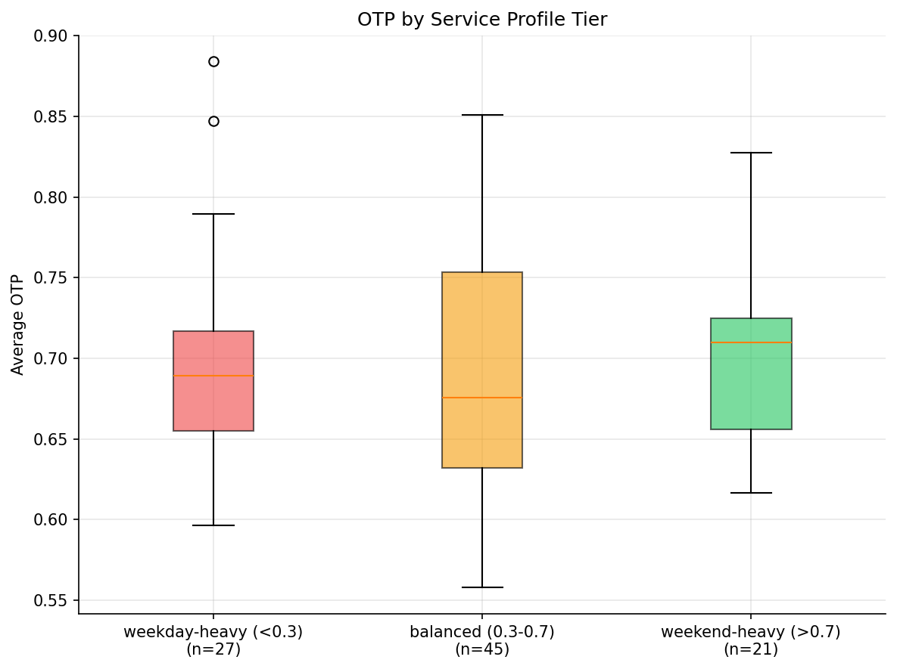
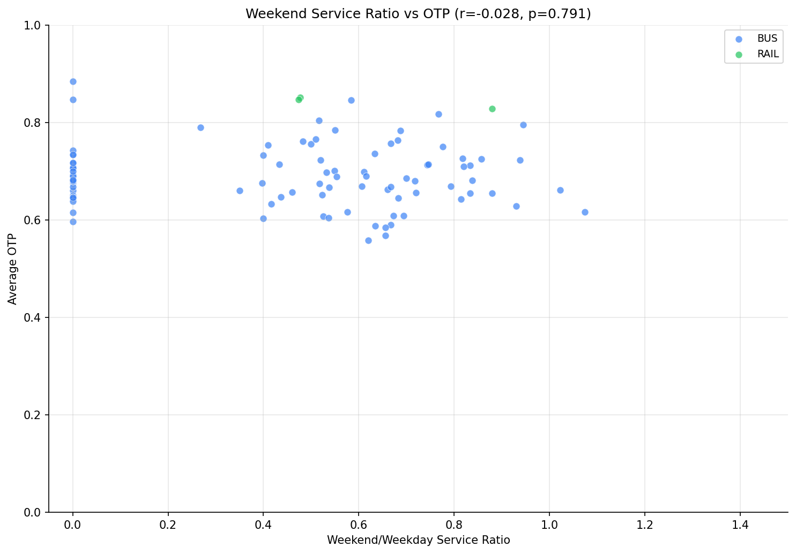

Analysis
17: Weekend vs Weekday Service Profile
Route and Service Drivers
Data Provenance
flowchart LR 17_weekend_weekday_profile["17: Weekend vs Weekday Service Profile"] t_otp_monthly["otp_monthly"] --> 17_weekend_weekday_profile 01_data_ingestion["Data Ingestion"] --> t_otp_monthly t_route_stops["route_stops"] --> 17_weekend_weekday_profile 01_data_ingestion["Data Ingestion"] --> t_route_stops t_routes["routes"] --> 17_weekend_weekday_profile 01_data_ingestion["Data Ingestion"] --> t_routes d1_17_weekend_weekday_profile["polars (lib)"] --> 17_weekend_weekday_profile d2_17_weekend_weekday_profile["scipy (lib)"] --> 17_weekend_weekday_profile classDef page fill:#dbeafe,stroke:#1d4ed8,color:#1e3a8a,stroke-width:2px; classDef table fill:#ecfeff,stroke:#0e7490,color:#164e63; classDef dep fill:#fff7ed,stroke:#c2410c,color:#7c2d12,stroke-dasharray: 4 2; classDef file fill:#eef2ff,stroke:#6366f1,color:#3730a3; classDef api fill:#f0fdf4,stroke:#16a34a,color:#14532d; classDef pipeline fill:#f5f3ff,stroke:#7c3aed,color:#4c1d95; class 17_weekend_weekday_profile page; class t_otp_monthly,t_route_stops,t_routes table; class d1_17_weekend_weekday_profile,d2_17_weekend_weekday_profile dep; class 01_data_ingestion pipeline;
Findings
Findings: Weekend vs Weekday Service Profile
Summary
There is no meaningful correlation between a route's weekend-to-weekday service ratio and its OTP. Routes that run heavy weekend service perform identically to commuter-oriented weekday-heavy routes.
Key Numbers
- Pearson r = -0.03 (p = 0.79, n = 93)
- Spearman rho = -0.02 (p = 0.84)
| Service Tier | Routes | Mean OTP |
|---|---|---|
| Weekday-heavy (<0.3) | 27 | 69.8% |
| Balanced (0.3-0.7) | 45 | 68.8% |
| Weekend-heavy (>0.7) | 21 | 70.3% |
Observations
- The three service tiers are virtually indistinguishable in OTP (69.8%, 68.8%, 70.3%).
- Neither Pearson nor Spearman correlations approach significance.
- This null result makes sense: the weekend service ratio reflects demand patterns and scheduling choices, not route structure. A route with high weekend service isn't inherently harder to run on time.
- Since OTP is reported monthly (not by day-of-week), it aggregates weekday and weekend performance, which may mask day-specific patterns.
- Bus-only correlation (r = -0.06, p = 0.56) confirms the null result holds within the dominant mode.
Implication
Weekend vs weekday service intensity is not a useful predictor of OTP. The structural factors identified in other analyses (stop count, mode, route length) dominate.
Review History
- 2026-02-10: RED-TEAM-REPORTS/2026-02-10-analyses-12-18.md — 2 issues (both moderate). Bus-only correlation added; caveats strengthened. Null finding unchanged.
Output
Generated tabular or textual data artifact produced by this analysis.

Generated chart image produced by this analysis.

Generated chart image produced by this analysis.
Methods
Methods: Weekend vs Weekday Service Profile
Question
Do commuter-oriented routes (high weekday, low weekend service) perform differently than all-day routes (similar weekday and weekend service)? The ratio of weekend to weekday trips signals route purpose, and since OTP is reported monthly, it likely reflects weekday-dominant measurement.
Approach
- For each route, compute peak weekday trips (MAX trips_wd), peak Saturday trips (MAX trips_sa), and peak Sunday trips (MAX trips_su) from
route_stops. - Compute weekend ratio = (max_sa + max_su) / (2 * max_wd), representing the proportion of weekday service provided on weekends (1.0 = identical, 0 = weekday-only).
- Correlate weekend ratio with average OTP.
- Classify routes as weekday-heavy (ratio < 0.3), balanced (0.3-0.7), or weekend-heavy (> 0.7) and compare OTP distributions.
- Scatter plot and box plot.
Data
| Name | Description | Source |
|---|---|---|
route_stops |
Weekday, Saturday, Sunday trip counts per stop | prt.db table |
otp_monthly |
Monthly OTP per route | prt.db table |
routes |
Mode and name | prt.db table |
Output
output/service_profile.csv-- per-route trip counts, weekend ratio, and OTPoutput/weekend_ratio_vs_otp.png-- scatter plotoutput/service_tier_comparison.png-- box plot by service profile tier
Sources
| Name | Type | Description |
|---|---|---|
| otp_monthly | table | Monthly OTP values by route. Produced by Data Ingestion. |
| route_stops | table | Route-stop bridge with service frequency metrics. Produced by Data Ingestion. |
| routes | table | Route dimension table. Produced by Data Ingestion. |
| polars | dependency | Dataframe library used for fast tabular data transformations and aggregation. |
| scipy | dependency | Scientific computing library used for statistical tests and numerical routines. |